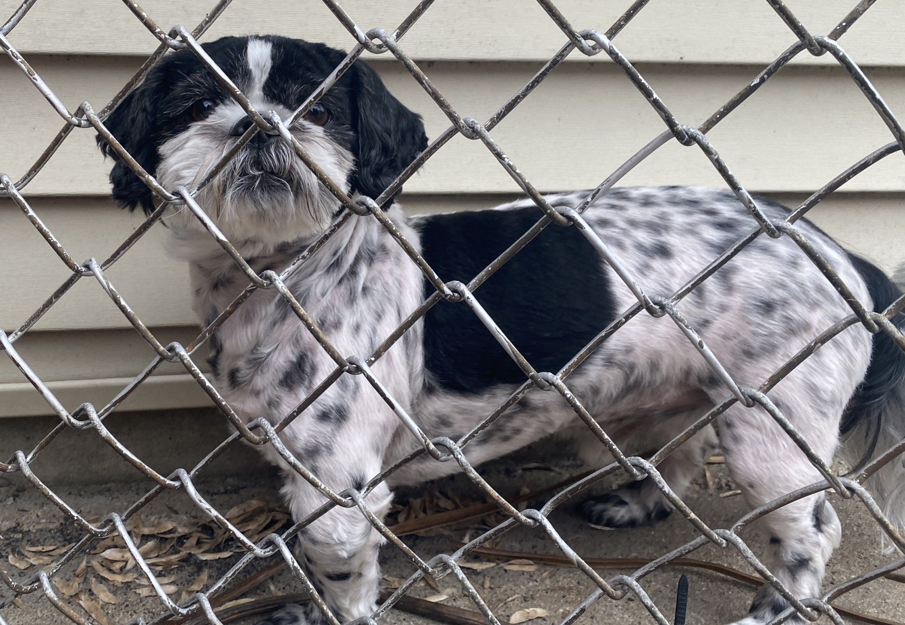

Contact Me!

Animals all over the world are being abandoned and being put into the streets causing issues for Shelters and over population and spread of disease. Owners of pets keep abandoning them in the streets without going to a shelter first. And those who visit a shelter most of the time get rejected due to limit of space causing the probabilities of a pet being abandoned on the street much greater. Dumping their pets on the street is not only bad for them mentally but if the animal is a baby it is almost instant death for them.